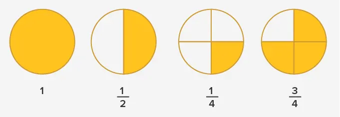
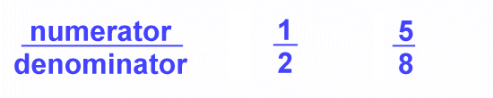

What are fractions?
Fractions represent equal parts of a whole or a collection.When something is broken up into a number of parts, the fraction shows how many of those parts you have.
Sometimes the best way to learn about fractions is through a picture. See the pictures below to see how the whole of a circle can be broken up into different fractions. The first picture shows the whole and then the other pictures show fractions of that whole.

A fraction has two main parts: the numerator and the denominator.

The numerator is the number which appears above the line and it represents how many parts you have. The denominator is the number appearing below the line and it represents how many parts the whole was divided into.